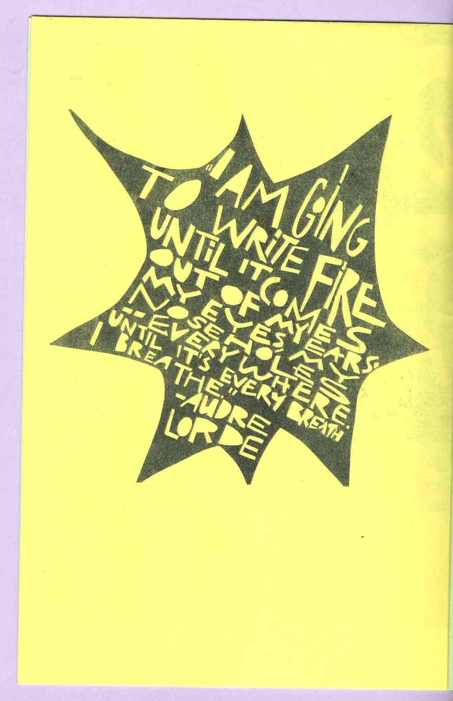

about the project
Shape Becomes Story: Collected Pages for In-betweens is a companion to the research and artwork created by Carmen Ribaudo as the 2021-2022 Creative Fellow at the Providence Public Library (PPL). This digital reading room presents a variety of works from PPL's Special Collections as well as the zine library at Queer.Archive.Work (QAW) that have figured in Carmen's artistic process while working on her project for PPL's Spring 2022 exhibition "Tomboy."
This reading room provides a glimpse into a broader universe of art and writing spanning time and place that houses Carmen's work. Our goal for this project was to place older materials contained within PPL's archive in conversation with work by contemporary queer artists like Carmen and the featured zinemakers. In curating and designing this reading room, we focused on building a thematic throughline of wonder—for the world, the self, and the body. We invite you to reflect on your own stories and build your own throughlines as you peruse this space.
Shape Becomes Story was developed collaboratively by Carmen Ribaudo and Kate Hao, with crucial support from Angela DiVeglia, Janaya Kizzie, and Christina Bevilacqua. Please see the credits section at the end of this page for a full list of the works displayed here. If you like what you see, all these materials and more are available to view in-person, either through visiting PPL's Special Collections or at QAW's Open Library Hours!
Thank you for stopping by!
using the reading room
For full functionality, this site is ideally viewed on a larger screen. Some text-heavy images can be opened in a separate window for a full-size view. Hovering your mouse over certain images may lead to different views as well (if you're on a touch screen device, tapping these images should do the trick) — and there are hyperlinks embedded throughout the texet & images that wil take you to different sections of the room. In other words, there's more than one path you can take while exploring this space!
SHE IS ELECTRIC
"living btwn the lines" by Andriniki Mattis (2019) | expand image
i walk this rod / of a body / attracting lightning / at every turn
—Andriniki Mattis
—Thunder and Lightning
SHE IS CLOUD
by Carmen Ribaudo (2022) | expand images
if you could be a force of nature, what would you be?
how would you move?
where would you go?
by Olive B. Godlee
from Heads, Bodies & Legs
by Denis Wirth-Miller and Richard Chopping (1946)
PLEASE CLICK!
by Olive B. Godlee | expand image
PROCESS IS PLAY
from Slow Looking by Lukaza Branfman-Verissimo (2021) | expand images
"We can start with random shapes that don't mean anything, and just through the act of touching them ... you can make stories."

from Carmen Ribaudo's Animated Art Talk at the Providence Public Library (May 14, 2022)
what objects can you see, touch, sense around you?
what stories could you tell with them?
SHE LIGHTS UP
from Elastic Capacity by K. Laster (2021) | expand image
from Elastic Capacity by K. Laster (2021) | expand image
WE ARE FULL
from ROT #9 by Arthur Katrina | expand image
from ROT #8 by Arthur Katrina
from ROT #9 by Arthur Katrina
The Aurora, or Dawn, itself was one of these divinities, and the most charming of them. Always beautiful with freshness and youth, she was ever saluted and hailed with gratitude, because she it was who came the first to announce the defeat of the powers of darkness and evil, and each morning, like a tender and faithful messenger, awoke the sons of men.

from ROT #8 by Arthur Katrina | expand image
from Wonders of the Moon (1873)


what parts of you change? what parts are constant?
how do you know?
how might you learn?

credits
from the Q.A.W. zine library:
living btwn the lines by Andriniki Mattis. New York: Belladonna*, 2019.
[TITLE] by Olive B. Godlee.
Slow Looking by Lukaza Branfman-Verissimo. Portland, ME: Childish Books, 2021.
Elastic Capacity by K. Laster. Oakland, CA: National Monument Press, 2021.
ROT #8 by Arthur Katrina.
ROT #9 by Arthur Katrina.
from PPL Special Collections:
Thunder and lightning by W. de Fonvielle. Translated from the French, and edited by T. L. Phipson. New York: Scribner, Armstrong and Co., 1875.
Meteors, aerolites, storms, and atmospheric phenomena. Translated from the French of Zurcher and Margolle. by William Lackland. New York: Scribner, Armstrong and Co., 1876.
Wonders of the moon. Translated from the French of Amedee Guillemin by Miss M.G. Mead. Edited, with additions, by Maria Mitchell. New York: Scribner, Armstrong and Co., 1873.
Heads, Bodies & Legs by Denis Wirth-Miller and Richard Chopping. New York: Puffin Books, 1946.